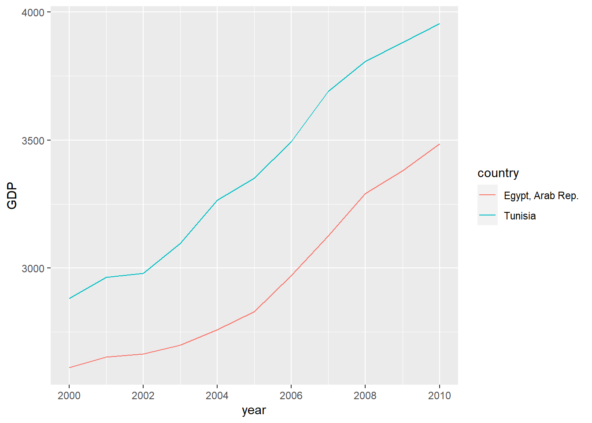
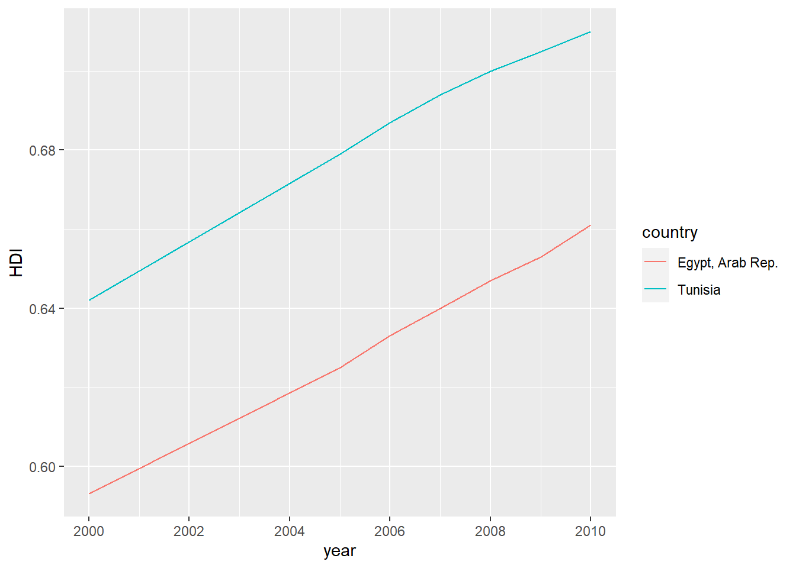
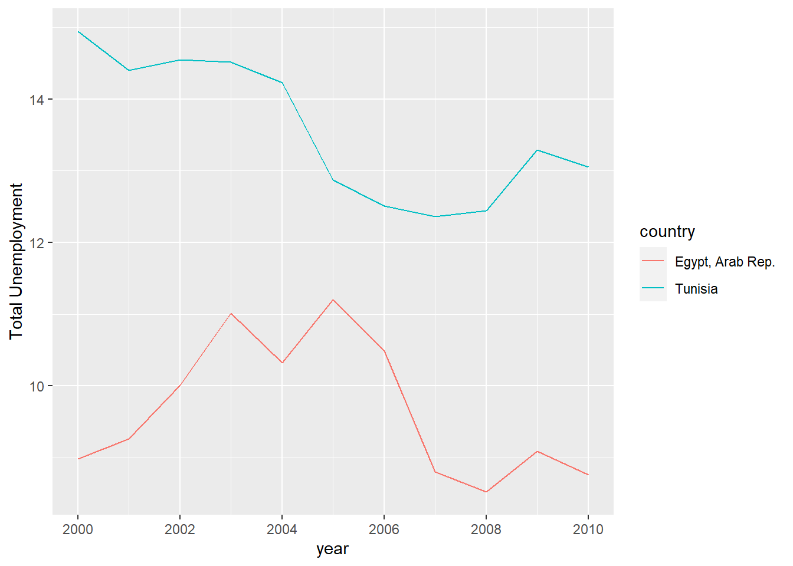
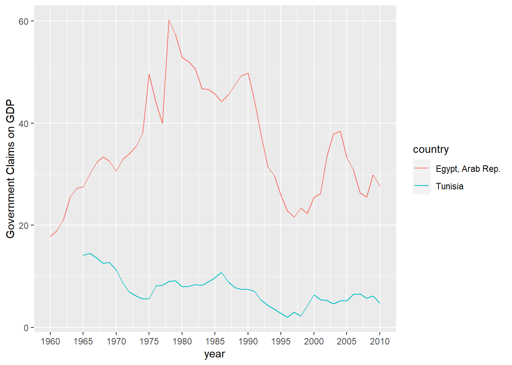

Code
library(WDI)
library(tidyverse)
library(summarytools)Yakub Rabiutheen
September 4, 2022
The Arab Spring was a Revolutionary Social Movement that resulted in protests that in some instances led to civil war such as Syria and Libya, and autocratic leaders stepping down such as Egypt and Tunisia. This Final Project looks at the economic factors in Tunisia and Egypt to see what economic factors were relevant to the Arab Spring happening in Egypt and Tunisia. I also want to explore the how state-owned enterprises affected Egypt and Tunisia’s economy. In this project, I use data from the World Bank and the various economic indicators to explore economic metrics during the Arab Spring. As I am using the package(WDI), to fetch the using an API, there is no CSV file. If anyone wishes to look at the same data or run the same commands, all you have to do is install the (WDI) package.
There are two research questions being explored in this project.My first research question uses Mill’s Method of Agreement, where there are two or more instances of the same phenomenon and the causality is what is being explored. The Dependent variable is already known with the two case studies that I have chosen, Egypt and Tunisia. Both countries resulted in the autocrats in their countries stepping down with Ben Ali, President of Tunisia, resigning in January 14, 2011 and Hosni Mubarak, President of Egypt, resigning in February 11,2011. The Independent variable is unknown and I will be testing various economic indicators from 2008 to 2010.
There is also a second research question that I will be exploring.The second research question that I want to test for this assignment is whether State Owned Enterprises(SOE) in Egypt and Tunisia played a factor in Youth Unemployment, as well how did SOE labor participation for Women. However this one will require going back to the 1960s as during the 60s there was Arab Socialist Regimes in Tunisia and Egypt that heavily invested in State Owned Enterprises so that the economy would be less reliant on the private sector(Amico,2017).
So I will testing the following theories.
As seen below, I kinda just threw various economic indicators from the World Bank and added the years I was interested in. I found out later that you could search for specific countries by Symbol such as TN “Tunisia”. This is why a lot of my chunks below have filter statements. You can definitely remove the Country parameter I added, but it does slow down the runtime for the “economic_indicators” dataset being generated.
WDI(indicator = c("EG.ELC.ACCS.ZS", # access to electricity
"BN.CAB.XOKA.GD.ZS", # current account balance
"IC.BUS.DFRN.XQ", # ease of doing business
"FP.CPI.TOTL.ZG", # CPI
"FR.INR.LNDP", # interest rate spread
"NY.GDP.PCAP.KD"),# GDP
country = c("TN","EG"),start = 2000, end = 2010) %>% as_tibble() -> economic_indicatorsRenamed the Columns so that I could keep track easier.
Doing a Check to make sure the Names of the Columns have Changed.
[1] "iso2c" "country" "year"
[4] "Electricity_Access" "Account_Balance" "Ease_Of_Doing_Business"
[7] "CPI" "Interest_Rate_Spread" "GDP" Creating a Filter for Egypt as well as making the CPI Calculation a Percentage.
egypt_cpi<-economic_indicators %>%
filter(country == "Egypt, Arab Rep.") %>%
mutate(cpiprop = CPI/100) %>%
ggplot(.,aes(year, cpiprop)) +
geom_bar(stat="identity", alpha=.8, fill="#619cff", color="black") +
scale_x_continuous(breaks = seq(2000, 2010, by = 2)) +
scale_y_continuous(labels = scales::percent) +
labs(x = "", y = "Consumer Price Index (Annual %)",
caption = "Data: International Monetary Fund, via {WDI}",
title = "The Consumer Price Index (Annual %) in Egypt, 2000-2010",
subtitle = "Looking at Inflation Trends Prior to the Arab Spring")Creating a Filter for Tunisia as well as making the CPI Calculation a Percentage.
tunisia_cpi<-economic_indicators %>%
filter(country == "Tunisia") %>%
mutate(cpiprop = CPI/100) %>%
ggplot(.,aes(year, cpiprop)) +
geom_bar(stat="identity", alpha=.8, fill="#619cff", color="black") +
scale_x_continuous(breaks = seq(2000, 2010, by = 2)) +
scale_y_continuous(labels = scales::percent) +
labs(x = "", y = "Consumer Price Index (Annual %)",
caption = "Data: International Monetary Fund, via {WDI}",
title = "The Consumer Price Index (Annual %) in Tunisia, 2000-2010",
subtitle = "Looking at Inflation Trends Prior to the Arab Spring")As plotted below, it seems that both Tunisia and Egypt both had spikes in Inflation although it seems Egypt had much more higher rates of Inflation. In 2008, Inflation for both countries was at it’s peak. However the Arab Spring for both countries happened in January 2011, if inflation was the primary cause of the Arab Spring, why didn’t it happen in 2008. If anything, Inflation was improving from 2008 to 2010.
Here I did a filter for Tunisia and Egypt as well as a Select function to make it easier to read my dataset.
It looks like the GDP Per Capita actually went up for both Tunisia and Egypt from 2008 to 2010, the economic trends show that GDP was increasing prior to the Arab Spring. However GDP per Capita is not a fully accurate representation of the economy as a whole. As GDP represents the mean of a population and doesn’t consider income inequality(Carr,2017). For example, Bermuda has the highest GDP per Capita in the world as it is a tax heaven, despite most of population working in the small fishing industry, making meager wages(Carr,2017). Other factors such as HDI would provide a better representation of the social problems.

As shown below, the HDI of both countries is between 0.6 and 0.7. This means that they would be classified as Medium in terms of HDI and the HDI of both countries were constantly rising and had a very upward trend(United Nations,2022). So in terms of HDI these countries are quite average for a developing country, as for example, India’s HDI is usually around 0.6 during 2008 to 2010(United Nations,2022)

Here is an factor of unemployment, that I am looking at. When we look at Total Unemployment it’s actually very high but decreasing after 2008. However this looks at Total Unemployment. Perhaps, looking at Youth Employment would be more relevant. As countries in the Arab World from ages 15 to 29 comprise the largest proportion of the population(Bajoria,2011). The Arab Spring is often regarded as a movement of Young Arabs who wanted their needs to be addressed(Bajoria,2011).

As shown below, Youth unemployment has always been at least 25% from 2000 to 2010. That means one out of every four Arabs, ages from 15 to 24 were out of a Job and had no job. This is gives us a huge insight, that economic metrics for the Youth in this country is what we should be looking at. As there seems to be a general trend in my analysis for most metrics, that factors such as GDP, HDI show that an upward trend despite the notion that Tunisia and Egypt were economically getting worse for young people and that’s why those countries had an uprising. A better approach is to look at the Youth and their economic metrics instead of the population as a whole.
The Second research question that I want to test for this assignment is whether State Owned Enterprises played a factor in Youth Unemployment and perhaps damaged the economy as a whole in Tunisia and Egypt. However this one will require going back to the 1960s as during the 60s there was Arab Socialist Regimes in Tunisia and Egypt that heavily invested in State Owned Enterprises so that the economy would be less reliant on the private sector(Amico,2917).
So I will testing the following theories.
As shown below, since the 1980s, there was a massive drop of Government Claims on the GDP but then a upward trend happened during the 2000s. It looks under Mubarak for example, there was a much greater increase of Government Claims on GDP more than triple the amount under Gamal Nasser who was considered a socialist.

Let’s see if there is any correlation between Youth Unemployment and Government Claims on GDP.
[1] -0.490647That’s a complete negative Correlation.Perhaps Young people are able to get those Government jobs but the Supply is greater than the Demand.
As seen below, a similar negative correlation happens when military spending % of GDP is increased. It seems that Military Spending and Government Claims on GDP actually increase employment for young people.As Such we can conclude that theory 1 is not accurate there is a negative correlation between youth unemployment for both Military Spending % of GDP as well as Government Claims on GDP.
[1] -0.3744965In Contrast, for Women there is a strong correlation of Unemployment for Women, when the Military Spending is increased as well as Government Claims on GDP. This Confirms that Female Unemployment increased with state enterprises having more country of the Economy.
[1] 0.8043021[1] 0.7467696As such, I can conclude that there isn’t much evidence for the assumption that state-owned enterprise as well as military spending led to the high levels of Youth Unemployment. However, it does have a strong correlation with high levels of Female Unemployment for Tunisia and Egypt.
##Conclusion
For research question one, I can conclude that Youth Unemployment is definitely the strongest causation factor out of the other economic indicators that I explored. GDP per Capita and HDI were constantly increasing under Mubarak and Ben Ali. Since at least 25% of Arab Youth were unemployed from 2008 to 2010, that allowed for large amounts of young protesters to mobilize as 1/4 of them had no job and had time to protest as well as organize a social movement to overthrow their authoritarian leaders.
For research question two, there would have to be further greater exploration but I wasn’t able to tie the factor of State Owned Enterprises to Youth Unemployment as there was a negative correlation of Government Claims of GDP and youth unemployment. However, I was able to establish that Government Claim of GDP or Government having more assets of GDP%(SOE), resulted in less Female participation in the labor force. This is an important revelation as SOE firms are often more male-dominated, as such one has to address the fact if the government is used to employ people during high times of unemployment in Tunisia and Egypt, women might be left out in such government initiatives. This is similar to how in America during the New Deal, African Americans were less likely to get jobs in New Deal Job programs as there was a racial bias against government employment of African Americans at that time.
##References Amico, A. (2017, January 1). Arab states as shareholders: Origins and consequences. International Development Policy | Revue internationale de politique de d�veloppement. Retrieved September 4, 2022, from https://journals.openedition.org/poldev/2282#quotation Nations, U. (2022, July 28). Human development index. Human Development Reports. Retrieved September 3, 2022, from https://hdr.undp.org/data-center/human-development-index#/indicies/HDI Bajoria, J. (2011, February 14). Demographics of Arab protests. Council on Foreign Relations. Retrieved September 4, 2022, from https://www.cfr.org/interview/demographics-arab-protests Carr, T. (2020, June 10). EconPress. Retrieved September 3, 2022, from https://web.northeastern.edu/econpress/2017/01/23/a-critique-of-gdp-per-capita-as-a-measure-of-wellbeing/
:::{#quarto-navigation-envelope .hidden}
[Final Project]{.hidden render-id="quarto-int-sidebar-title"}
[Final Project]{.hidden render-id="quarto-int-navbar-title"}
[August 2022 Posts]{.hidden render-id="quarto-int-navbar:August 2022 Posts"}
[Contributors]{.hidden render-id="quarto-int-navbar:Contributors"}
[DACSS]{.hidden render-id="quarto-int-navbar:DACSS"}
:::
:::{#quarto-meta-markdown .hidden}
[ - Final Project]{.hidden render-id="quarto-metatitle"}
:::
<!-- -->
::: {.quarto-embedded-source-code}
```````````````````{.markdown shortcodes="false"}
---
title: "Final Project"
author: "Yakub Rabiutheen"
desription: "Egypt and Tunisia, Economic Analysis"
date: "09/04/2022"
format:
html:
toc: true
code-fold: true
code-copy: true
code-tools: true
categories:
- final_project
---
quarto-executable-code-5450563D
```r
#| label: setup
#| warning: false
library(WDI)
library(tidyverse)
library(summarytools)The Arab Spring was a Revolutionary Social Movement that resulted in protests that in some instances led to civil war such as Syria and Libya, and autocratic leaders stepping down such as Egypt and Tunisia. This Final Project looks at the economic factors in Tunisia and Egypt to see what economic factors were relevant to the Arab Spring happening in Egypt and Tunisia. I also want to explore the how state-owned enterprises affected Egypt and Tunisia’s economy. In this project, I use data from the World Bank and the various economic indicators to explore economic metrics during the Arab Spring. As I am using the package(WDI), to fetch the using an API, there is no CSV file. If anyone wishes to look at the same data or run the same commands, all you have to do is install the (WDI) package.
There are two research questions being explored in this project.My first research question uses Mill’s Method of Agreement, where there are two or more instances of the same phenomenon and the causality is what is being explored. The Dependent variable is already known with the two case studies that I have chosen, Egypt and Tunisia. Both countries resulted in the autocrats in their countries stepping down with Ben Ali, President of Tunisia, resigning in January 14, 2011 and Hosni Mubarak, President of Egypt, resigning in February 11,2011. The Independent variable is unknown and I will be testing various economic indicators from 2008 to 2010.
There is also a second research question that I will be exploring.The second research question that I want to test for this assignment is whether State Owned Enterprises(SOE) in Egypt and Tunisia played a factor in Youth Unemployment, as well how did SOE labor participation for Women. However this one will require going back to the 1960s as during the 60s there was Arab Socialist Regimes in Tunisia and Egypt that heavily invested in State Owned Enterprises so that the economy would be less reliant on the private sector(Amico,2017).
So I will testing the following theories.
As seen below, I kinda just threw various economic indicators from the World Bank and added the years I was interested in. I found out later that you could search for specific countries by Symbol such as TN “Tunisia”. This is why a lot of my chunks below have filter statements. You can definitely remove the Country parameter I added, but it does slow down the runtime for the “economic_indicators” dataset being generated. quarto-executable-code-5450563D
WDI(indicator = c("EG.ELC.ACCS.ZS", # access to electricity
"BN.CAB.XOKA.GD.ZS", # current account balance
"IC.BUS.DFRN.XQ", # ease of doing business
"FP.CPI.TOTL.ZG", # CPI
"FR.INR.LNDP", # interest rate spread
"NY.GDP.PCAP.KD"),# GDP
country = c("TN","EG"),start = 2000, end = 2010) %>% as_tibble() -> economic_indicatorsRenamed the Columns so that I could keep track easier. quarto-executable-code-5450563D
names(economic_indicators) <- c('iso2c', 'country', 'year', 'Electricity_Access', 'Account_Balance', 'Ease_Of_Doing_Business',
'CPI','Interest_Rate_Spread', 'GDP')Doing a Check to make sure the Names of the Columns have Changed.
quarto-executable-code-5450563D
Creating a Filter for Egypt as well as making the CPI Calculation a Percentage. quarto-executable-code-5450563D
egypt_cpi<-economic_indicators %>%
filter(country == "Egypt, Arab Rep.") %>%
mutate(cpiprop = CPI/100) %>%
ggplot(.,aes(year, cpiprop)) +
geom_bar(stat="identity", alpha=.8, fill="#619cff", color="black") +
scale_x_continuous(breaks = seq(2000, 2010, by = 2)) +
scale_y_continuous(labels = scales::percent) +
labs(x = "", y = "Consumer Price Index (Annual %)",
caption = "Data: International Monetary Fund, via {WDI}",
title = "The Consumer Price Index (Annual %) in Egypt, 2000-2010",
subtitle = "Looking at Inflation Trends Prior to the Arab Spring")Creating a Filter for Tunisia as well as making the CPI Calculation a Percentage. quarto-executable-code-5450563D
tunisia_cpi<-economic_indicators %>%
filter(country == "Tunisia") %>%
mutate(cpiprop = CPI/100) %>%
ggplot(.,aes(year, cpiprop)) +
geom_bar(stat="identity", alpha=.8, fill="#619cff", color="black") +
scale_x_continuous(breaks = seq(2000, 2010, by = 2)) +
scale_y_continuous(labels = scales::percent) +
labs(x = "", y = "Consumer Price Index (Annual %)",
caption = "Data: International Monetary Fund, via {WDI}",
title = "The Consumer Price Index (Annual %) in Tunisia, 2000-2010",
subtitle = "Looking at Inflation Trends Prior to the Arab Spring")As plotted below, it seems that both Tunisia and Egypt both had spikes in Inflation although it seems Egypt had much more higher rates of Inflation. In 2008, Inflation for both countries was at it’s peak. However the Arab Spring for both countries happened in January 2011, if inflation was the primary cause of the Arab Spring, why didn’t it happen in 2008. If anything, Inflation was improving from 2008 to 2010.
quarto-executable-code-5450563D
Here I did a filter for Tunisia and Egypt as well as a Select function to make it easier to read my dataset.
quarto-executable-code-5450563D
tunisa_vs_egypt<-select(filter(economic_indicators, country %in% c("Tunisia", "Egypt, Arab Rep.")), c(country,year,CPI,Electricity_Access,Account_Balance,GDP,Interest_Rate_Spread,))It looks like the GDP Per Capita actually went up for both Tunisia and Egypt from 2008 to 2010, the economic trends show that GDP was increasing prior to the Arab Spring. However GDP per Capita is not a fully accurate representation of the economy as a whole. As GDP represents the mean of a population and doesn’t consider income inequality(Carr,2017). For example, Bermuda has the highest GDP per Capita in the world as it is a tax heaven, despite most of population working in the small fishing industry, making meager wages(Carr,2017). Other factors such as HDI would provide a better representation of the social problems. quarto-executable-code-5450563D
p <- ggplot(tunisa_vs_egypt, aes(x=year, y=GDP,fill=country,color=country,shape=country)) +
geom_line()+scale_x_continuous(breaks = seq(2000, 2010, by = 2))
pquarto-executable-code-5450563D
hdi_factors <- WDI(
country = c("all"),
indicator = c("SL.UEM.1524.ZS","SL.UEM.TOTL.ZS","UNDP.HDI.XD","SP.DYN.LE00.IN"),
start = 2000,
end = 2010,
extra = FALSE,
cache = NULL,
latest = NULL,
language = "en")quarto-executable-code-5450563D
unemployment<-select(filter(hdi_factors, country %in% c("Tunisia", "Egypt, Arab Rep.")), c(country,year,SL.UEM.1524.ZS,SL.UEM.TOTL.ZS,UNDP.HDI.XD,SP.DYN.LE00.IN,))As shown below, the HDI of both countries is between 0.6 and 0.7. This means that they would be classified as Medium in terms of HDI and the HDI of both countries were constantly rising and had a very upward trend(United Nations,2022). So in terms of HDI these countries are quite average for a developing country, as for example, India’s HDI is usually around 0.6 during 2008 to 2010(United Nations,2022)
quarto-executable-code-5450563D
filter(unemployment, !is.na(UNDP.HDI.XD)) %>%
ggplot(aes(x=year, y=UNDP.HDI.XD,fill=country,color=country,shape=country)) +
geom_line()+scale_x_continuous(breaks = seq(2000, 2010, by = 2))+ scale_fill_discrete(na.translate=FALSE)+ylab("HDI")Here is an factor of unemployment, that I am looking at. When we look at Total Unemployment it’s actually very high but decreasing after 2008. However this looks at Total Unemployment. Perhaps, looking at Youth Employment would be more relevant. As countries in the Arab World from ages 15 to 29 comprise the largest proportion of the population(Bajoria,2011). The Arab Spring is often regarded as a movement of Young Arabs who wanted their needs to be addressed(Bajoria,2011). quarto-executable-code-5450563D
filter(unemployment, !is.na(SL.UEM.TOTL.ZS)) %>%
ggplot(aes(x=year, y=SL.UEM.TOTL.ZS,fill=country,color=country,shape=country)) +
geom_line()+scale_x_continuous(breaks = seq(2000, 2010, by = 2))+ scale_fill_discrete(na.translate=FALSE)+ylab("Total Unemployment")As shown below, Youth unemployment has always been at least 25% from 2000 to 2010. That means one out of every four Arabs, ages from 15 to 24 were out of a Job and had no job. This is gives us a huge insight, that economic metrics for the Youth in this country is what we should be looking at. As there seems to be a general trend in my analysis for most metrics, that factors such as GDP, HDI show that an upward trend despite the notion that Tunisia and Egypt were economically getting worse for young people and that’s why those countries had an uprising. A better approach is to look at the Youth and their economic metrics instead of the population as a whole.
quarto-executable-code-5450563D
The Second research question that I want to test for this assignment is whether State Owned Enterprises played a factor in Youth Unemployment and perhaps damaged the economy as a whole in Tunisia and Egypt. However this one will require going back to the 1960s as during the 60s there was Arab Socialist Regimes in Tunisia and Egypt that heavily invested in State Owned Enterprises so that the economy would be less reliant on the private sector(Amico,2917).
So I will testing the following theories.
hdi_factors <- WDI(
country = c("TN","EG"),
indicator = c("FS.AST.CGOV.GD.ZS","SL.UEM.1524.ZS","MS.MIL.XPND.GD.ZS","SL.UEM.TOTL.FE.ZS"),
start = 1960,
end = 2010,
extra = FALSE,
cache = NULL,
latest = NULL,
language = "en")As shown below, since the 1980s, there was a massive drop of Government Claims on the GDP but then a upward trend happened during the 2000s. It looks under Mubarak for example, there was a much greater increase of Government Claims on GDP more than triple the amount under Gamal Nasser who was considered a socialist.
quarto-executable-code-5450563D
filter(hdi_factors, !is.na(FS.AST.CGOV.GD.ZS)) %>%
ggplot(aes(x=year, y=FS.AST.CGOV.GD.ZS,fill=country,color=country,shape=country)) +geom_line()+scale_x_continuous(breaks = seq(1960, 2010, by = 5))+ scale_fill_discrete(na.translate=FALSE)+ylab("Government Claims on GDP")Let’s see if there is any correlation between Youth Unemployment and Government Claims on GDP.
quarto-executable-code-5450563D
That’s a complete negative Correlation.Perhaps Young people are able to get those Government jobs but the Supply is greater than the Demand.
As seen below, a similar negative correlation happens when military spending % of GDP is increased. It seems that Military Spending and Government Claims on GDP actually increase employment for young people.As Such we can conclude that theory 1 is not accurate there is a negative correlation between youth unemployment for both Military Spending % of GDP as well as Government Claims on GDP.
quarto-executable-code-5450563D
In Contrast, for Women there is a strong correlation of Unemployment for Women, when the Military Spending is increased as well as Government Claims on GDP. This Confirms that Female Unemployment increased with state enterprises having more country of the Economy.
quarto-executable-code-5450563D
cor(hdi_factors$FS.AST.CGOV.GD.ZS,hdi_factors$SL.UEM.TOTL.FE.ZS,use = "complete.obs")
cor(hdi_factors$MS.MIL.XPND.GD.ZS,hdi_factors$SL.UEM.TOTL.FE.ZS,use = "complete.obs")As such, I can conclude that there isn’t much evidence for the assumption that state-owned enterprise as well as military spending led to the high levels of Youth Unemployment. However, it does have a strong correlation with high levels of Female Unemployment for Tunisia and Egypt.
##Conclusion
For research question one, I can conclude that Youth Unemployment is definitely the strongest causation factor out of the other economic indicators that I explored. GDP per Capita and HDI were constantly increasing under Mubarak and Ben Ali. Since at least 25% of Arab Youth were unemployed from 2008 to 2010, that allowed for large amounts of young protesters to mobilize as 1/4 of them had no job and had time to protest as well as organize a social movement to overthrow their authoritarian leaders.
For research question two, there would have to be further greater exploration but I wasn’t able to tie the factor of State Owned Enterprises to Youth Unemployment as there was a negative correlation of Government Claims of GDP and youth unemployment. However, I was able to establish that Government Claim of GDP or Government having more assets of GDP%(SOE), resulted in less Female participation in the labor force. This is an important revelation as SOE firms are often more male-dominated, as such one has to address the fact if the government is used to employ people during high times of unemployment in Tunisia and Egypt, women might be left out in such government initiatives. This is similar to how in America during the New Deal, African Americans were less likely to get jobs in New Deal Job programs as there was a racial bias against government employment of African Americans at that time.
##References Amico, A. (2017, January 1). Arab states as shareholders: Origins and consequences. International Development Policy | Revue internationale de politique de d�veloppement. Retrieved September 4, 2022, from https://journals.openedition.org/poldev/2282#quotation Nations, U. (2022, July 28). Human development index. Human Development Reports. Retrieved September 3, 2022, from https://hdr.undp.org/data-center/human-development-index#/indicies/HDI Bajoria, J. (2011, February 14). Demographics of Arab protests. Council on Foreign Relations. Retrieved September 4, 2022, from https://www.cfr.org/interview/demographics-arab-protests Carr, T. (2020, June 10). EconPress. Retrieved September 3, 2022, from https://web.northeastern.edu/econpress/2017/01/23/a-critique-of-gdp-per-capita-as-a-measure-of-wellbeing/
:::